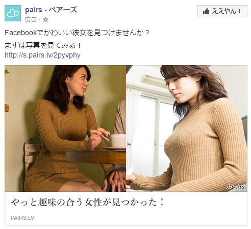
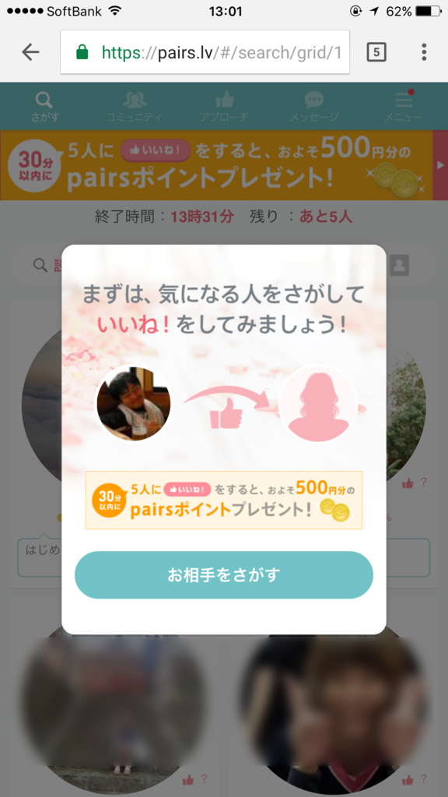
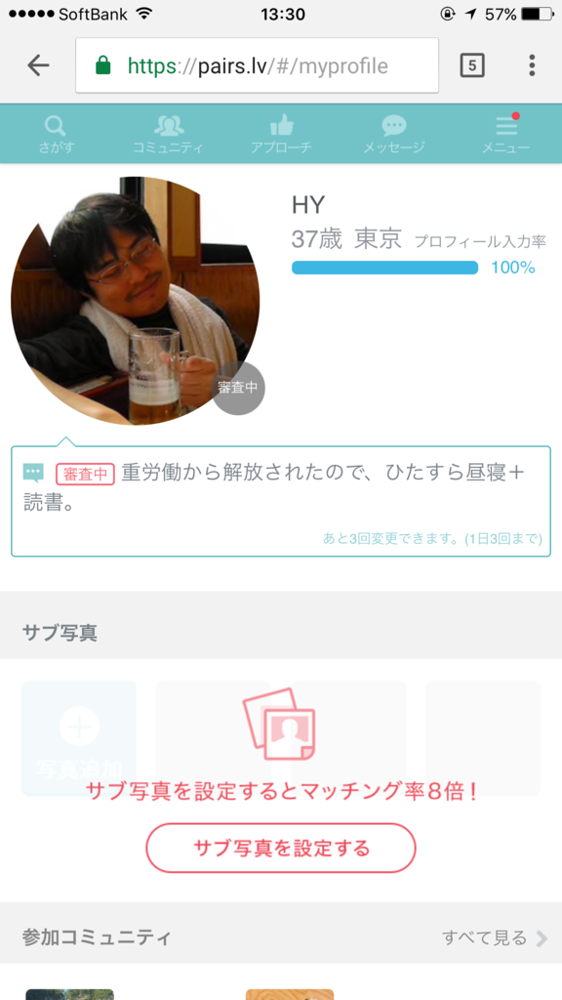
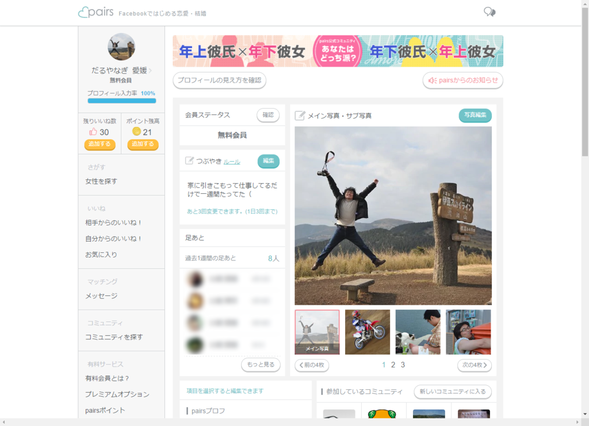

37歳のおっさんが「ペアーズ」に登録してみた
公開日：

前々から Facebook で広告を見かけて、「こんなかわいい女の子とお付き合いできるのか、辛抱たまらんなー」と思ってたのだけど、37歳になったのを機に登録してみた。
ペアーズはじめて6時間で可愛い彼女ができた
— エロやなぎ先生 (@daruyanagi) 2017年5月1日
っていうブログ記事かきたいんで、色々よしなにお願いしたい
基本的なすぃすてむ
 
ほぼ予習なしで*1登録してみたのだけど、男女で互いに“いいね”を付けあって、相思相愛（？）になったらメッセージを交わせるようになり*2、ウマくいけばワンチャンって感じらしい。――あまりのハードルの高さに眩暈がする。
よくはわからないが、検索機能で条件に合致する女の子を探し、気に入った子に手あたり次第“いいね”を付け、正座してお返しの“いいね”を待てばよいようだ。ただし、“いいね”には残弾制限があるので、無駄撃ちは慎まねばなるまい。
あと、昔懐かしい“mixi”でお馴染みの“足あと”機能がある。“足あと”が付いているっていうことは、検索機能で目に留まり、プロフィールをみてもらえたということらしい。また、自分が付けた“足あと”を手掛かりに、自分のプロフィールを見てもらえたという可能性もありうる。
つまり、魅力的なプロフィール画像を用意して検索機能で目を引くか、気になる女の子のプロフィールに“足あと”を付けまくって反応を窺う、というのが基本戦術になるようだ。
とにかく、プロフィールの充実は急務だな。
プロフィールやつぶやきの更新は承認制、らしい

プロフィールには実にさまざまな項目が設けられている。年収、出身地、居住地、勤務先、長男かどうか……以下諸々。こういうことは隠してもしょうがないから、すべての項目に正直に応えた。また、コミュニティにも参加して、なるべく自分がどんな属性をもつのかを明らかにしておく。
あと、1日3回まで交信できる短文“つぶやき”と、フリーテキストで自分をアピールできる“自己紹介文”というのがある。年収や勤務先といったパーソナルデータで十分に差別化できない負け組は、ここで創意工夫を凝らすしかない。フツーに趣味や休日の過ごし方を書いてるだけでは面白くないので、「自分の LINE スタンプがあります」という点もアピールしておいた。
――が、これは否認された。
どうやらプロフィールの更新には承認が必要らしく、個人情報の露出や下品な言動はハネられるようだ。オレの LINE スタンプがどっちに該当したのかは定かではないが、オリジナルスタンプがあるというアピールは引っ込めざるを得なかった。
ペアーズに載せるためのイケメン画像を探してる（ない
— エロやなぎ先生 (@daruyanagi) 2017年5月1日
— エロやなぎ先生 (@daruyanagi) 2017年5月3日
ヒャッハー！ “いいね”を付けてやるぜー！
準備が完了したので、今度はこちらから行動を起こす番だ。幸先よく3人も“いいね”をもらったが、自分は地元・愛媛のかわいい子とお付き合いがしたいのでスルー。居住地でフィルタリングして検索すると、ぬいぐるみやネコ、風景に混じって、女の子もいくらかいる。その中から吟味に吟味を重ね、半日ぐらい逡巡したのち、漸く意を決して、一人の女の子に“いいね”を付けてみた。
ペアーズで勇気をだして「いいね」つけてみたけど華麗にスルーされた模様（震え声
— エロやなぎ先生 (@daruyanagi) 2017年5月2日
どうやら応えてもはもらえなかったようだ。“足あと”欄に残る彼女の笑顔が眩しい。
よく考えれば、自分が「いいなー イチャイチャしてみたいなー」って思う女の子は当然ほかのオスにも人気があるはず。おそらく今回選んだ子などは“いいね”の数も二桁、下手したら三桁はいっているはずで、そんななかに俺のようなおっさんが“いいね”をしても、郵便受けに入っている不動産屋のチラシのごとく、読まれもせずに捨てられるのがオチだ。ここれは発想の転換が必要であろう。
ちょうどゴールデンウィーク中は“いいね”が付け放題になるキャンペーンが開かれているらしい。スーパーマリオでいえば、スターを食った後の無敵状態。残機を気にせず“いいね”を付けられるのだから、手あたり次第付けた方が賢いというものだろう。
ペアーズで女の子に「いいね」付ける嫌がらせを楽しんでる
— エロやなぎ先生 (@daruyanagi) 2017年5月6日
開始数日が経ち、要領を得、なんとなく「ペアーズ」を楽しめるようになったオレだったが――
限界集落アカウント
一週間経ち、なかなかお返しの“いいね”がもらえないことに焦りを感じ始める。それに伴い、ある種の虚しさが胸を支配するようになってきた。「いい歳をしたおっさんが年下の女の子に“いいね”を付けて遊んでるの、どうなんだ……おかんがみたら泣くだろうなぁ」“足あと”だけ残して、去っていく女性たち。きっとプロフィールを読んでガッカリしたり、嘲笑ったりしているのだろう。いや、それならばまだしも、気持ち悪いおっさんに絡まれて、イヤな思いはしていないだろうか*3。
そんなわけで、始めたころは2時間に1回ぐらい開いていた「ペアーズ」からだんだん足が遠のき、“足あと”をちょっと確認するだけになっていった。その“足あと”もだんだん減っていき、最終的には1日に2個あれば多い方という状態になる。
ペアーズ、とうとう昨日は足あとが一つもなかった
— エロやなぎ先生 (@daruyanagi) 2017年5月12日
無料版では“足あと”の履歴を最大6個までしか保持できないが、自分のペースであれば一週間ほどの“足あと”が見れるわけで、まったく問題はない。遂にはもらった“足あと”を辿って相手のプロフィールを見る気力すらなくなり、毎日ログインだけして、ボーナスコインを集めるだけになってしまった。
今日現在、使い道のよくわからないコインが 21 枚溜まっている。いくつためれば、あの子からお返しの“いいね”を買えるのだろうか。
まとめ
ちょっと楽しかったけど、まぁ、もうそろそろいいかなって感じ。生まれ変わったら、婚活は20代から始めようって思った。
Facebook でいろっぺえお姉ちゃんの広告を見るのは嫌いじゃないので（どっちかっていうと貧乳派だけど、巨乳セーターっていうジャンルもいいな( *´艸｀)）、「ペアーズ」にはこれからも頑張ってほしいと思っている。